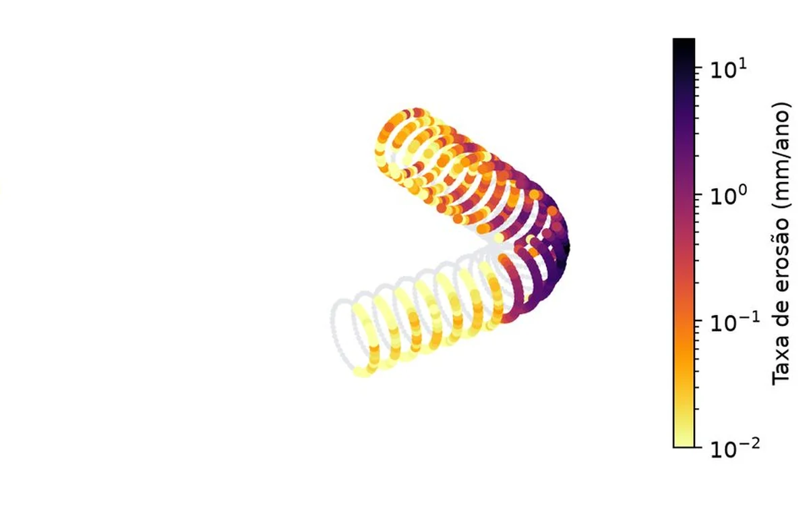

Where the wall erodes, at what rate, in how long — and why this number can carry a decision.
1.05–1.49×of the published experiment, inside the factor-2 band practice accepts
50.6°computed peak, against 45° measured
32 casesfrom CAD to trained model, in 22.6 min

Document ERC-04 · version 1.0 · 2026 Demonstration case (public geometry and conditions, no client data) Reference experiment: Vieira et al. (2016), open data PINNeAPPle Labs · LAIS & YAN LTDA · pinneapple-labs.github.io
ERC-04 · erosion in a 90° bend1 · the request
A 50 mm 90° bend carries sand-laden air. The question was not “how much erodes”: it was when the wall reaches the minimum thickness and whether changing the bend radius moves the answer enough to justify the work.
Contracted scope
Deliverable
What it contains
Erosion map
Wall rate (mm/year) across the geometry, with the peak position
Service life
Years to the minimum thickness, at the critical point
Verification
Comparison with a published experiment, and the choice of erosion model justified
Surrogate model
Answers in seconds for new flow rates and bend radii
Limits
What is not proven and what needs a test
Out of scope
Mechanical design of the pipe, material selection, field inspection, experimental testing. The study delivers the number and the proof; the engineering decision and the purchase stay with whoever hires us.
How to read this document. Every number appears with the reference it was checked against — a published experiment, an independent solver or a mesh study. Numbers without a reference do not enter the report: they stay on the limits page, as an open question.
Assumptions that move the answer
The sand rate is the one in the scenario; a particle surge moves the result more than the mesh.
The wall is carbon steel; another material changes the erosion coefficient, not the impact distribution.
The flow is steady at the evaluated operating point; transients (starts, water hammer) are not covered.
PINNeAPPle Labs · example report1
ERC-04 · erosion in a 90° bend2 · input data
This is the demonstration case form — in a client study these fields come from the CAD, the process sheet and the operating history.
Item
Value
Source
Geometry
90° bend, D = 50 mm
10·D upstream and 20·D downstream
Fluid
air at 20 °C · ρ = 1.204 kg/m³ · µ = 1.825·10⁻⁵ Pa·s
fluid catalogue
Particles
quartz · ρp = 2,650 kg/m³ · dp = 150 µm
Fs = 0.53 · ṁp = 10⁻⁴ kg/s
Wall
carbon steel · 7,800 kg/m³ · HB 150
5 → 2 mm · 8,760 h/year
Reference point
U = 20 m/s · R/D = 1.5
base case for the map and the mesh study
Campaign
32 points · Sobol
U from 10 to 30 m/s · R/D from 1.5 to 5
Study rule: the validity range is declared before the run. Outside U = 10–30 m/s or R/D = 1.5–5 the surrogate says it is extrapolating — and the number loses its guarantee.
simpleFoam, k-ω SST, 109 iterations to converge, mass balance 3.5·10⁻⁶
Particles
icoUncoupledKinematicParcelFoam, 2,000 parcels (4,000 in the statistical test)
Erosion
DNV-RP-O501 impact model applied to the wall impacts; E/CRC and Finnie as cross-checks
Case convergence
26 s wall-clock on 4 cores · 14 to 17 thousand wall impacts
PINNeAPPle Labs · example report2
ERC-04 · erosion in a 90° bend3 · verification
Before reporting an erosion rate, the model had to reproduce an experiment it had never seen: the Vieira et al. (2016) bend, D = 76.2 mm, R/D = 1.5, 150 µm sand, at three velocities.
Test
U (m/s)
Measured (mm/year)
Computed (mm/year)
Ratio
Factor 2
T1
11
6.5
6.8
1.05×
passed
T3
15
13.2
16.9
1.28×
passed
T5
23
36.2
53.8
1.49×
passed
peak position
—
45°
50.6°
+5.6°
passed
150 µm sand in all three tests. Ratios and positions computed with the DNV-RP-O501 impact model, on the study mesh. Measured: Khan et al. (2023); peak position: Khan et al. (2022).
Why this matters. Erosion is not a 1%-precision phenomenon: it depends on the particle distribution, the material and the operating history. Design practice accepts a factor of 2. The commitment is to land inside the band and say where in the band.
The other models were tested and rejected
Erosion model
Against the three tests
Reading
DNV-RP-O501 (impact)
1.05–1.49×
adopted inside factor 2 at all three
E/CRC
1.98–2.5× above
rejected leaves the band at all three
Finnie
~28× above
rejected wrong order of magnitude
DNV §8.4 closed form (no CFD)
97–100× below in 2 of 3
rejected depends on factor G, which ranges 0.02 to 1
What is not proven yet. The erosion constants of all three models come from secondary sources (the original experiment is paywalled). The verification above is the best evidence available today, declared as such — not as definitive validation.
PINNeAPPle Labs · example report3
ERC-04 · erosion in a 90° bend4 · result
First the experiment, solved: T3, 15 m/s
Wall erosion map for test T3: the whole pipe and the zoom into the bend, with the peak on the outer wall just after the bend entry. Scale in mm/year.
The maximum is not in the middle of the bend: it is on the outer wall, 50.6° after the entry (the experiment measures 45°). That is the point inspection must measure first — and the one that sets the life of the rest of the line.
Then the design case: U = 20 m/s, R/D = 1.5
Erosion model
Peak rate (mm/year)
Life 5 → 2 mm
DNV-RP-O501 (adopted)
1.47
2.0 years
E/CRC
2.83
1.1 years
Finnie (cross-check)
23.8
0.13 year
DNV §8.4 closed form (no CFD)
0.037
81 years
What the decision needs to know: with the verified model, projected life is 2 years at the critical point. The closed form without CFD would say 81 years for the same geometry. The difference is not precision: it is the choice between “planned replacement” and “no action”.
PINNeAPPle Labs · example report4
ERC-04 · erosion in a 90° bend5 · surrogate model
Thirty-two cases covering U from 10 to 30 m/s and R/D from 1.5 to 5 were solved in CFD and used to train a model that answers in seconds. All 32 finished without rejection, in 22.6 min wall-clock (1.94 CPU-hours).
Indicator
Reference without AI
Validation
Test
Out of range
Pressure drop (ΔP)
Darcy + Colebrook
0.7%
1.0%
0.4%
Peak erosion rate
DNV §8.4
15.7%
10.6%
19.7%
Mean relative error. The bootstrap confidence interval was not computed: there are 9 test and out-of-range points, and the criterion requires at least 10.
What it is for
Varying diameter, bend radius and flow rate no longer costs a day per point.
Service life stops being a single number and becomes a curve against flow rate.
Outside the training range the model says it is extrapolating, with the measured 19.7% error.
What the surrogate does not do: replace the experiment. It reproduces the CFD inside the trained range — if the CFD is wrong for your case, the surrogate is wrong with it, faster.
PINNeAPPle Labs · example report5
ERC-04 · erosion in a 90° bend6 · limits
This page exists because a number without its limits is an opinion with decimal places. Everything that did not pass an external reference is here.
Item
State
Practical consequence
Campaign mesh
coarse
10,400 cells: ~30% high on ΔP and ~40% low on erosion, against the extrapolated fine-mesh value
Mesh convergence (GCI)
off target
ΔP at 6.8–12.6% GCI on the fine mesh (target 5%); erosion converges only at the reference point (2.9%)
Erosion constants
secondary source
DNV, E/CRC and Finnie come from secondary literature; the original experiment is paywalled
Fields sent to verification
6 checks did not run
11 for, 0 against, 65% coverage
Surrogate interpolation
measured
1.0% on ΔP and 10.6% on erosion, at points held out of training
Surrogate extrapolation
warned, not guaranteed
outside U 10–30 m/s or R/D 1.5–5 the error rises (19.7%)
House rule. A coarse-mesh result counts as a demonstration of the pipeline, not as a client number. This document is public for exactly that reason.
What would take this number up a level
Campaign on the fine mesh, with GCI inside 5% for erosion as well.
Our own test, or buying the original experiment, to replace the secondary constants.
Sending the full fields to verification, closing the six checks that did not run.
PINNeAPPle Labs · example report6
ERC-04 · erosion in a 90° bend7 · conclusion
1.47mm/year at the critical point
2.0years to 5 → 2 mm
50.6°peak position in the bend
1.0%surrogate error on ΔP
Recommendation
Inspect the outer wall just after the bend entry, not the middle of the bend. With the verified rate and the adopted minimum thickness, the planned-replacement window is two years — and the surrogate lets you test, in seconds, whether a larger radius buys more time than a material change.
What this study does not decide
Which material to buy, which supplier to pick, when to stop the plant. It delivers the rate, the position and the error; the economic decision uses those numbers together with downtime cost and pipe price.
Provenance
What
Where
Reference experiment
Vieira et al. (2016), E/CRC Tulsa · open table in Khan et al. (2023), Eng. Proc. 45:28
This is an example report, built on a demonstration case with public geometry and conditions. A study for your plant follows the same structure, with the same limits page.